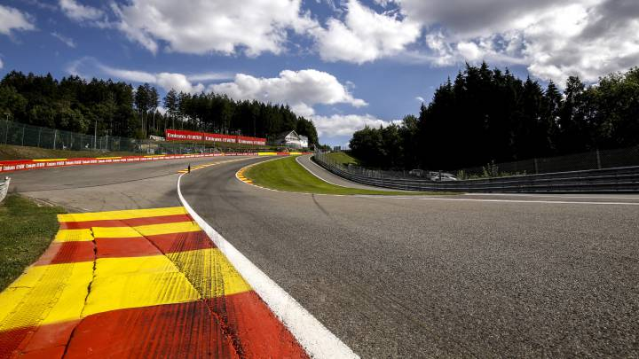

Historia
El inicio de la Fórmula 1 moderna se remonta al año 1950, en el que participaron escuderías como Ferrari, Alfa Romeo y Maserati.
Leer másComida
Muchos dirán que la gran respuesta se divide en tres, entre Juan Manuel Fangio, Michael Schumacher y Ayrton Senna.
Leer más
Escuderias
Un equipo está formado además de piloto, copiloto y un vehículo, por una lista de personas encabezada por un jefe de equipo y un jefe técnico.
Leer más

Circuitos
La carrera se mide la distancia que debe ser al menor número de vueltas que exceda los 305 km.
Leer más
FIA
Las funciones fundamentales de esta organización son establecer unidad y promover la actividad entre los clubs automovilísticos que estén asociados.
Leer más